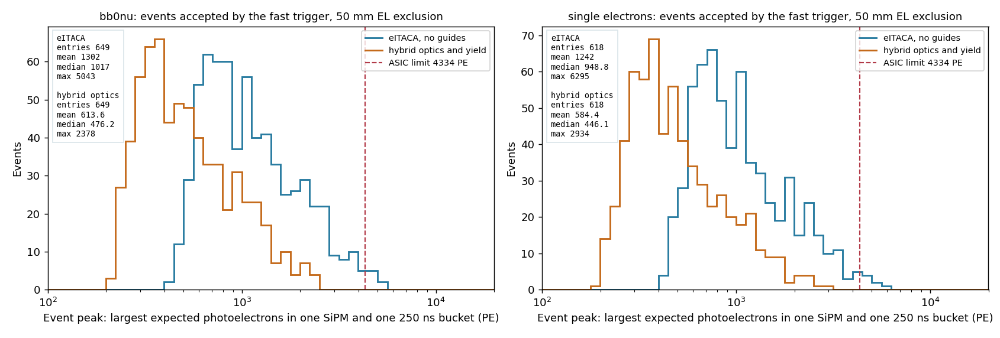
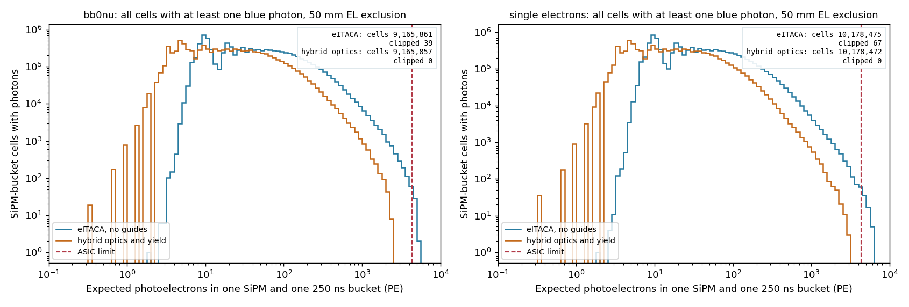
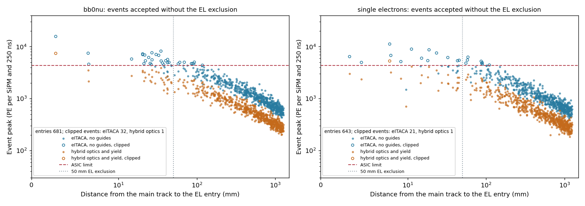
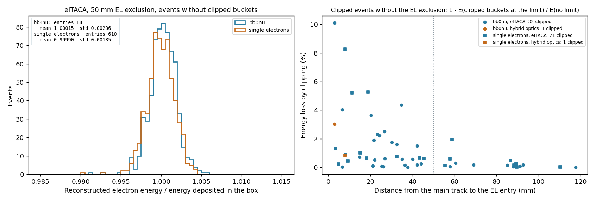

Answer
With the 50 mm EL exclusion, the eITACA SiPM readout saturates in a few events: 16 of 1267 accepted events have a clipped bucket. The largest event peak is 5043 PE (bb0nu) and 6295 PE (single electrons) per SiPM and 250 ns bucket, 1.16 and 1.45 of the ASIC limit of 4334 PE. Microcell recovery removes at most 0.35 % of the charge of an event, and the reconstruction corrects it. Without the exclusion, 32 of 681 bb0nu and 21 of 643 single-electron events clip; the largest energy loss of a clipped event is 10 %. With the exclusion, the clipped events lose at most 1.9 % of their energy, and their main tracks lie at most 118 mm from the EL entry; 33 bb0nu and 31 single-electron accepted events lie that close. With the hybrid optics and yield, 0 events clip with the exclusion and 2 without it.
Without guides, each EL photon gives 0.0356 blue photons at the SiPM, 3.000 times the 0.0119 of the guides. The eITACA yield is 849 photons per electron against 1195 of the hybrid card, so the light per electron is 2.131 times the hybrid one.
Inputs and chain
- Events: the Xe/He pilot
$NAUSICAA_DATA/pilot_10x100/{bb0nu,electron}/, 10 batches of 100 generated events of each sample, generated in Xe–15 % He at 16 bar in a chamber of 1.8 m radius and 1.3 m length. The run cards override the eITACA radius (2.0 m) and length (1.5 m) to 1.8 m and 1.3 m so that the fast trigger and the drift lengths match the files. Light per SiPM does not depend on them. Transport and yield are those of 15.8 % He; the tracks were simulated in 15 % He. - Fast trigger: fixed 160 mm cube, 20 mm simulation margin, 3 keV gamma veto, main track at least 50 mm from the EL entry (
config/eitaca/trigger.toml). The runs marked “no EL exclusion” set that distance to 0. - Electron response (
sim_electron_detector_response): Fano pairs, attachment with 100 ms lifetime, diffusion D_T = 2.735 and D_L = 3.72 mm/√m (D*/√P at 16 bar), drift velocity 0.49 mm/µs, 4 mm SiPM lattice with a random offset per event, 250 ns buckets, EL photons and blue photons at the SiPM. - SiPM and ASIC (
sim_sipm_readout), with the hybrid cards unchanged:config/specs/response/sipm/elm_pitch4mm_3015ps_tau12p5ns_recovered.toml(PDE 0.32, 21,808 illuminated microcells, 12.5 ns recovery, fully recovered start) andconfig/specs/response/sipm_electronics/readout_v1.toml(0.5 PE noise, 1 mA upper limit = 4334 PE per 250 ns bucket). - Reconstruction (
reco_electron_signal,rebin_electron_signal,reconstruct_hits): mean dark subtracted, recovery inverse m/(1 − αm), clipped buckets invalid, attachment corrected, 20 buckets per hit bucket. - Random streams per event (
EItaca.event_seed), with the seeds of the hybrid pilot: the primary pairs and diffusion draws are those of the hybrid production, and the eITACA and reference runs differ only in the light.
Saturation criteria, as in the hybrid clipping pilots (results/sipm_statistical_production_pilot/clipping_comparison.html): ASIC clipping (cells with photons whose input exceeds the 1 mA limit, events with a clipped bucket, charge retained) and the microcell recovery loss, 1 − SiPM charge / (detected PE + dark avalanches). The event peak is the largest blue-photon count in one SiPM and one 250 ns bucket times the PDE. The peak occupancy is α × peak, α = τ/(M Δt): the fraction of the bucket's recovered-cell equivalents the peak uses. For an event with clipped buckets the readout is repeated with the same random streams and no ASIC limit, which gives the energy without clipping.
Saturation
| Sample | Optics | Input events | Accepted | s per accepted event | Detected PE per event (10⁶) | Peak median (PE) | Peak max (PE) | Peak max / ASIC limit | Cells with photons clipped (%) | Events with clipping | Sample charge lost (%) | Largest energy loss of a clipped event (%) | Largest recovery loss (%) | Largest peak occupancy (%) |
|---|---|---|---|---|---|---|---|---|---|---|---|---|---|---|
| bb0nu | eITACA | 822 | 649 | 0.10 | 1.071 | 1017 | 5043 | 1.16 | 0.00043 | 8 (1.2 %) | 0.0014 | 0.29 | 0.28 | 1.2 |
| bb0nu | hybrid optics and yield | 822 | 649 | 0.08 | 0.503 | 476 | 2378 | 0.55 | 0 | 0 (0.0 %) | 0 | 0 | 0.13 | 0.55 |
| bb0nu | eITACA, no EL exclusion | 822 | 681 | 0.09 | 1.072 | 1050 | 15733 | 3.63 | 0.0043 | 32 (4.7 %) | 0.057 | 10 | 0.63 | 3.6 |
| bb0nu | hybrid optics, no EL exclusion | 822 | 681 | 0.08 | 0.503 | 490 | 7437 | 1.72 | 0.00011 | 1 (0.1 %) | 0.0039 | 3 | 0.28 | 1.7 |
| single electrons | eITACA | 789 | 618 | 0.12 | 1.071 | 949 | 6295 | 1.45 | 0.00066 | 8 (1.3 %) | 0.0051 | 1.9 | 0.35 | 1.4 |
| single electrons | hybrid optics and yield | 789 | 618 | 0.10 | 0.503 | 446 | 2934 | 0.68 | 0 | 0 (0.0 %) | 0 | 0 | 0.15 | 0.67 |
| single electrons | eITACA, no EL exclusion | 789 | 643 | 0.12 | 1.071 | 985 | 11244 | 2.59 | 0.0028 | 21 (3.3 %) | 0.043 | 8.3 | 0.58 | 2.6 |
| single electrons | hybrid optics, no EL exclusion | 789 | 643 | 0.09 | 0.503 | 460 | 5301 | 1.22 | 5.8e-05 | 1 (0.2 %) | 0.001 | 0.82 | 0.28 | 1.2 |
Sample charge lost: ASIC charge removed by clipping over the SiPM charge of all accepted events. Energy loss of a clipped event: 1 − E(clipped buckets kept at the limit) / E(no limit). In the reconstruction, as in the hybrid production, a clipped bucket is invalid and the event energy undefined.



eITACA against the hybrid optics, event by event
| Sample | Selection | Paired events | Event peak ratio, mean | Event peak ratio, median | Detected PE ratio, mean |
|---|---|---|---|---|---|
| bb0nu | 50 mm EL exclusion | 649 | 2.120 | 2.119 | 2.131 |
| bb0nu | no EL exclusion | 681 | 2.121 | 2.120 | 2.131 |
| single electrons | 50 mm EL exclusion | 618 | 2.125 | 2.125 | 2.131 |
| single electrons | no EL exclusion | 643 | 2.125 | 2.124 | 2.131 |
Ratios eITACA / reference for the same event, same pairs and diffusion draws. The light per electron gives the expected ratio 2.131.
Hybrid production of the same events (results/readout/{bb0nu,single_electrons}_itaca_pilot_10x100, 350 V/cm, Magboltz transport, guides): events with invalid electron buckets
0 of 649 (bb0nu) and 0 of 618 (single electrons).
Energy

Files
- Batches:
results/eitaca/pilot/IE_pilot_*/batches/b*/electrons.h5(scripts/eitaca/run_eitaca_batch.jl, run cardsconfig/eitaca/runs/IE_pilot_*.toml). - Summary:
results/eitaca/pilot/pilot_summary.h5(scripts/eitaca/prepare_eitaca_pilot.jl); this page:scripts/eitaca/present_eitaca_pilot.py.